BSMI 風力發電預測：七專案整合總覽
只用一座 BSMI 100 m 測風塔（2016-03 ~ 2021-10，66 個月）＋ 物理功率曲線建立「虛擬風場」，做完整的資源評估、點預測、機率／區間預測與軌跡預測。
整理框架：原始資料 → 品質控制 → 虛擬出力（物理）→ 特徵工程 → 預測方法 → 建模架構與驗證 → 結果。全部固定亂數種子、可完全重現。
0 · 總覽與專案地圖
七個專案共用同一座測風塔，但在 QC 哲學、虛擬出力機型、出力單位、以及「區間」的定義上分兩大家族。先把它們放在同一張地圖上。
七專案分類表
| 專案 | 來源檔 | 驗證 / QC 方式 | 虛擬出力 Y 的機型 | 出力單位 | 家族 |
|---|---|---|---|---|---|
| PW | BSMI_10min | 自建 01 獨立 QC → is_ok | ~8 MW 曲線 | 正規化 0–1 | 家族一 |
| PW_Integrated | BSMI_10min | 自建 01 獨立 QC → is_ok | ~8 MW 曲線 | 正規化 0–1 | 家族一 |
| PW_Interval | BSMI_10min | 自建 01 獨立 QC → is_ok | ~8 MW 曲線 | 正規化 0–1 | 家族一 |
| power_forecast_interval_ge | BSMI_10min | 自建 01 獨立 QC → is_ok | ~8 MW 曲線 | 正規化 0–1 | 家族一 |
| power_forecast（根） | BSMI_10min | 直接信上游 is_valid（不重跑 QC） | ~8 MW 曲線 | 正規化 0–1 | 家族一 |
| power_interval_forecast_cl | BSMI_10min | 直接信 is_valid（import 根專案） | ~8 MW 曲線 | 正規化 0–1 | 家族一 |
| advanced_forecasting | BSMI_10min ＋ BSMI_turb | 直接信 is_valid | NREL 5 MW 官方曲線 | 絕對 kW/MW | 家族二 |
家族一 虛擬 ~8 MW · 正規化 0–1
把出力當成「容量因數的瞬時值」（0–1），結論對機型穩健。六個專案分別聚焦不同任務：純點預測、資源評估、機率區間、窗口能量、台電結算。
PWPW_IntegratedPW_Intervalpower_forecastinterval_geinterval_cl
家族二 NREL 5 MW · 絕對 kW/MW
advanced_forecasting 改用 NREL 5 MW 官方功率曲線輸出絕對功率（MW）與能量（MWh），並額外併入 BSMI_turb 湍流特徵，示範三種進階方法（Conformal / Quantile / Trajectory）。
advanced_forecasting
關鍵概念：「區間」有兩個意思
- 時間的區間（窗口 / 能量）：預測未來一段時間 \([t{+}1,\,t{+}H]\) 的平均或總量。回答「未來這段時間總共發多少電？」→ 對應
PW_Interval、interval_ge（系統 A）。 - 不確定性的區間（機率）：對某個預測值給出可信範圍 p10–p90。回答「這一刻多不確定？」→ 對應
interval_cl（系統 B）、advanced_forecasting的 quantile / conformal。
整理框架（六階段管線）
您原本的框架是五段：原始資料特徵 → 特徵處理 → 預測方法 → 建模架構 → 最後結果。建議在前面補上兩個對風能特別關鍵、且是本系列專案「誠實界線」所在的階段——品質控制與虛擬出力的物理建模——形成更完整的六階段。
四重品質控制
空氣密度修正
無洩漏遮罩
前推 CV
經濟價值
- ② 虛擬出力是本系列的核心前提——測風塔沒有實測發電量，Y 是用功率曲線 + 空氣密度修正從風速推得的。把它獨立成一階段，才能誠實交代「Y 從哪來、為何用正規化」，也是家族一 vs 家族二差異的所在。
- ① QC 是可信度的地基——七專案的差異之一就是「自建獨立 QC」vs「直接信上游
is_valid」。把 QC 顯性化，審閱者才知道每個數字站在什麼樣的資料品質上。
1原始資料與品質控制
1.1 資料來源
BSMI 100 m 離岸測風塔
- 期間：2016-03 ~ 2021-10（66 個月，僅整月缺 2020-03、2021-06）
- 原始解析度：1 Hz 逐秒
- 4 個高度風速：100E / 100W / 69W / 38W m
- 2 個風向：97 m / 35 m
- 氣象：氣溫、相對濕度、氣壓 → 推空氣密度
- 塔本身沒有實測發電量（見階段 2）
兩張衍生資料表
BSMI_10min.parquet：1 Hz 聚合成 10 分鐘平均表（含覆蓋率與統計量），約 285,189 列 × 48 欄。BSMI_turb.parquet：湍流目標表（10 分鐘 std/mean、陣風因子、頻譜量），約 285,189 列 × 35 欄。僅 advanced_forecasting 與湍流降尺度專案使用。- 切分：訓練 2016–2018／驗證 2019／測試 2020–2021（或以
2020-06-01為保留測試起點）。
1.2 品質控制（四重 QC）
家族一的專案不盲信上游旗標，獨立重跑一輪 QC；家族二則直接採信 is_valid。獨立 QC 內容：
- 時間軸去重 + 建立連續 10 分鐘網格
- 物理範圍檢查：風速 0–60 m/s、溫度 −10–50 °C、濕度 0–105%、氣壓 950–1050 hPa、空氣密度 1.0–1.4 kg/m³
- 感測器凍結偵測：連續 ≥ 1 h 定值視為異常
- 四高度一致性：100E/100W 配對差、風向向量長度檢查
is_valid」則假設上游 QC 可靠、換取管線簡潔。兩者有效筆數幾乎一致（~278,600），代表上游旗標其實可信——這本身就是一個值得報告的驗證結論。2虛擬出力建模（物理層）
因為塔沒有實測發電量，出力 Y 由「風速 × 功率曲線」推得。這一段全是物理公式、無機器學習，卻決定了整個 Y 的意義。
2.1 空氣密度修正（IEC 61400-12-1）
冬夏空氣密度差約 5%，直接影響出力。先把量測風速修正成標準密度下的等效風速：
其中 \(\rho\) 由現場氣溫、氣壓、濕度計算。指數 \(1/3\) 來自風功率密度 \(P \propto \rho\,U^3\)：把密度變化折算成等效風速。
2.2 功率曲線（兩種機型）
家族一 ~8 MW 正規化曲線
S 形查表 + 線性內插，切入 3、額定 ~12、切出 25 m/s，輸出 正規化出力 \(P\in[0,1]\)（= 容量因數瞬時值）：
關鍵節點：\(u{=}3\!\to\!0.01\)，\(6\!\to\!0.20\)，\(9\!\to\!0.68\)，\(11\!\to\!0.94\)，\(12\!\to\!0.99\)，\(13\text{–}25\!\to\!1.0\)，\(>25\!\to\!0\)。
家族二 NREL 5 MW 官方曲線
採 NREL 5 MW 參考機組官方查表（kW），額定 5000 kW（於 11.4 m/s 達額定），輸出絕對功率：
切入 3.0、額定 11.4（5 MW）、切出 25 m/s；\(P_{\text{MW}} = P_{\text{kW}}/1000\)。能量 \(E=\sum P\,\Delta t\)（\(\Delta t=1/6\) h）。
2.3 敏感度用簡化立方模型 & 輪轂高外推
簡化立方功率模型（換機型敏感度分析）
\(u_{\text{in}}{=}3,\ u_{\text{out}}{=}25\)；改變額定風速 \(u_{\text{r}}\) 測 CF 對機型的敏感度。
冪次律風切外推到輪轂高
\(\alpha\) = 由多高度風速估的風切指數。塔高 100 m 假設 ≈ 輪轂高；需要時可外推到 100–150 m。
2.4 站點資源評估（此物理層的直接產物）
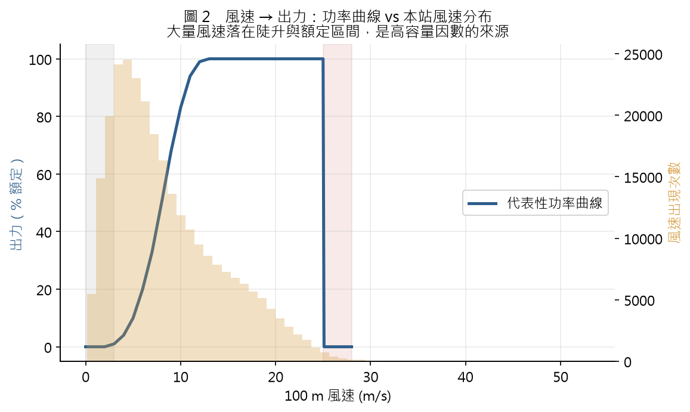
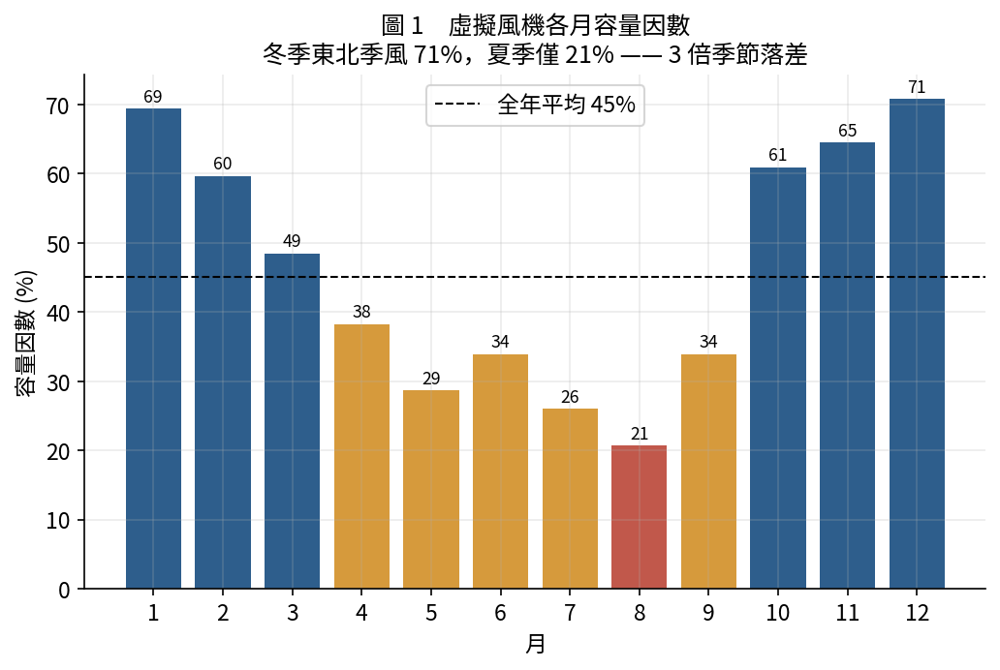
3特徵工程
共 44 個特徵（家族一）／ ~50 個特徵（家族二，另含湍流），全部只用 \(t\) 時刻(含)以前資訊，嚴格避免時間洩漏。
3.1 特徵分類
當前氣象態
- 100 m 與四高度風速
- 湍流強度 TI、陣風因子
- 風向 sin/cos、風向 σ
- 溫濕壓、空氣密度
- 風切指數 α、當前出力 P
時間動態
- 滯後 lag：\(t{-}10/20/30/60/120/180\) 分
- 滾動統計（1h/3h/6h）：均值、標準差、min、max、趨勢斜率
- 變化率 diff：近 1h、3h 風速差分
週期編碼
- 小時 sin/cos（日夜）
- 年內日 sin/cos（季節）
3.2 無洩漏目標與連續性遮罩
目標由未來值 shift(-H) 取得，並用連續性遮罩 \(m_h\) 確保 \(t\ldots t{+}H\) 全段時間連續（跨資料斷點的錯位目標設為 NaN 剔除）：
區間／能量任務的目標則是窗口的平均或累積：
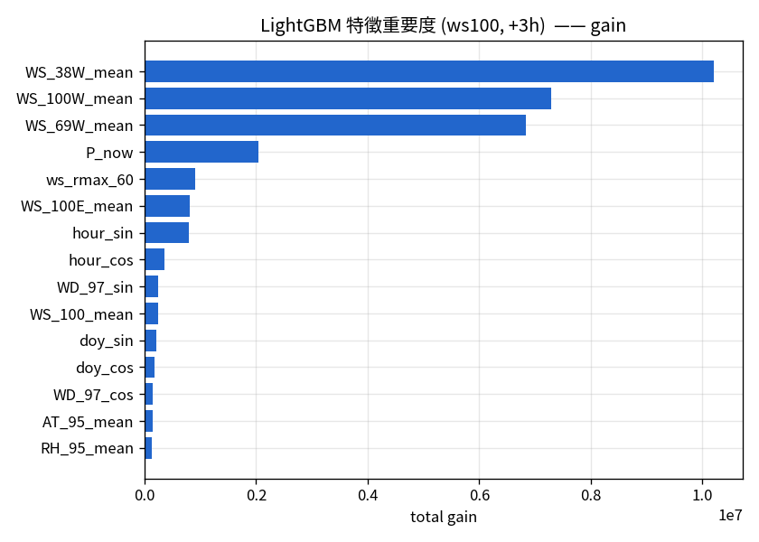
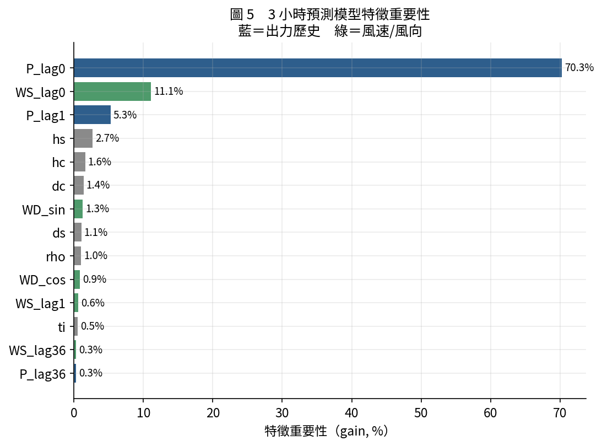
4預測方法
四類任務，逐級加深：點預測 → 窗口能量 → 機率區間 → 多步軌跡。以下給出每一種的核心公式。
4.1 基準線與點模型
基準線
- Persistence：\(\hat y=P(t)\)（超短期最強樸素基準）
- 對稱 Persistence（窗口任務）：以「過去 H 小時滾動均值」預測「未來 H 小時均值」
- Climatology：月 × 時的歷史平均（只靠季節/日夜）
學習型點模型
- Ridge：標準化 + L2 線性
- XGBoost / LightGBM：梯度提升樹，early stopping
- 結論：LightGBM 在所有目標與時程全面最佳（功率曲線本身高度非線性，樹模型能吃下非線性與交互）
4.2 機率預測：分位數迴歸 + 保形校正（CQR）
分位數迴歸：對每個時程各訓練多條 LightGBM 分位數（p05…p95），最小化 pinball loss：
單調化：逐列排序消除分位數交叉。CQR 保形校正：用獨立校正集（2019）算「不符合分數」，讓測試涵蓋率貼齊名目值（可交換性下有理論保證）：
4.3 區間預測：Conformal Prediction（advanced_forecasting）
點模型 + 校準殘差得對稱 90% 區間：
4.4 多步軌跡：遞迴（Recursive Multi-Step）
只訓練一個 1 步（t→t+10min）模型，將預測回填為下一步輸入，遞迴展開至 144 步（24h）；並與各時程直接（Direct）模型對照。
4.5 評分公式（評估用）
Winkler 區間分數（越小越好）；CRPS 以各分位 pinball loss 平均近似；Sharpness = 平均區間寬度。
5建模架構與驗證
時序切分（嚴格不洩漏）
- 家族一：訓練期 < 2020-06；保留測試年 2020-06 ~ 2021-10（約 17 個月，2021-06 缺測）。
- 家族二：訓練 2016–2018／驗證 2019／測試 2020–2021；conformal 另切 15% 校準集。
- CQR 校正集：獨立用 2019 年。
驗證與超參數
- 訓練期內 expanding-window TimeSeriesSplit 前推 CV（不洩漏未來）。
- LightGBM 典型：
lr=0.03、num_leaves=45、subsample=0.8、colsample=0.8、n_estimators=250、seed=42。 - 全部固定亂數種子、可續跑、可完全重現。
6結果與應用價值
6.1 超短期點預測（家族一，正規化 nRMSE，測試年）
| 預測標的 | 提前量 | Persist. | Clim. | Ridge | XGBoost | LightGBM | 勝 Persist. |
|---|---|---|---|---|---|---|---|
| 100 m 風速 | +1h | 0.149 | 0.479 | 0.141 | 0.138 | 0.1355 | +8.8% |
| 100 m 風速 | +3h | 0.259 | 0.494 | 0.231 | 0.221 | 0.2176 | +16.1% |
| 100 m 風速 | +6h | 0.372 | 0.502 | 0.311 | 0.297 | 0.2937 | +21.0% |
| 正規化發電量 P | +1h | 0.284 | 0.655 | 0.267 | 0.252 | 0.2481 | +12.7% |
| 正規化發電量 P | +3h | 0.456 | 0.665 | 0.396 | 0.366 | 0.3611 | +20.8% |
| 正規化發電量 P | +6h | 0.624 | 0.671 | 0.490 | 0.455 | 0.4494 | +27.9% |
核心觀察：技術得分隨時程放大（+1h 時 persistence 已很強，到 +6h 模型優勢擴大到 +21%/+28%）——正是調度最需要幫助的區間。發電量比風速難預測（功率曲線陡峭段把中風速小誤差放大）。
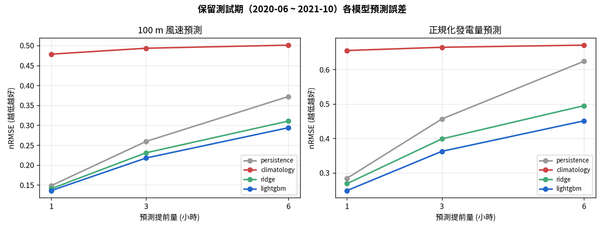
6.2 窗口能量 / 區間平均預測（系統 A）
改預測「未來窗口平均出力（≡總能量）」後，平均抹平高頻雜訊，\(R^2\) 大幅提升：
| 提前量 H | 區間平均 \(R^2\) | Persist. \(R^2\) | nRMSE(cap) | 相對改善 | p10–p90 涵蓋率 |
|---|---|---|---|---|---|
| 1h | 0.955 | — | 0.0835 | +27.5% | 90.1% |
| 3h | 0.914 | 0.881 | 0.1144 | +39.2% | 88.8% |
| 6h | 0.867 | 0.760 | 0.1396 | +44.2% | 88.7% |
| 24h | 0.712 | — | 0.1848 | +28.4% | 70.4% → CQR 81% |
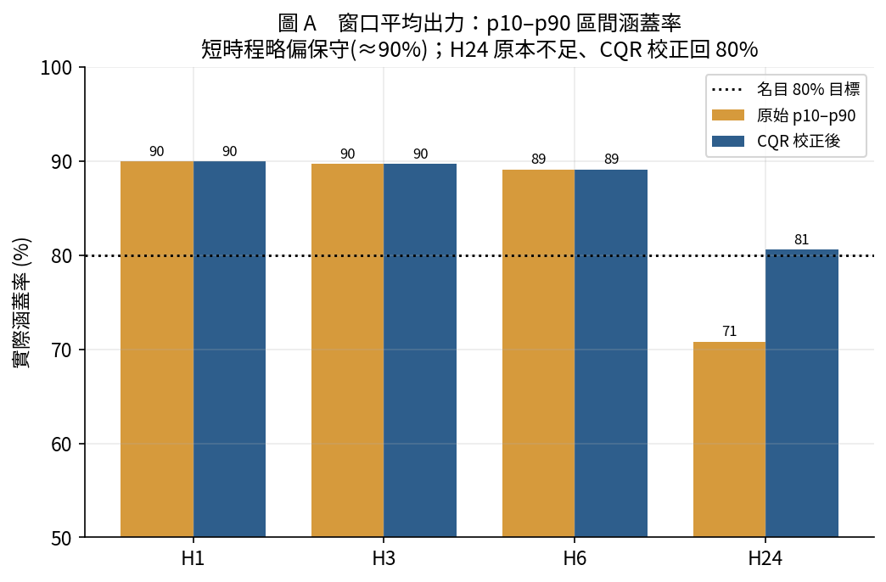
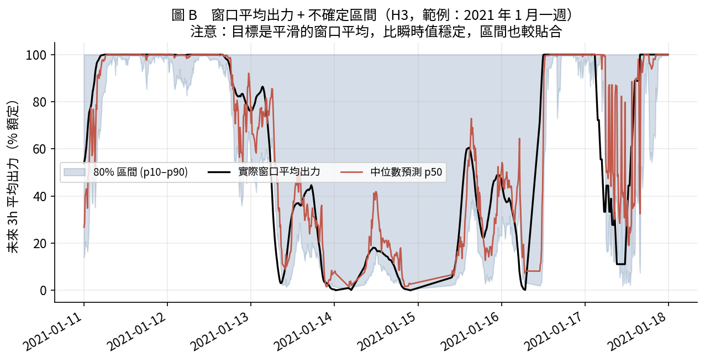
6.3 瞬時機率區間（系統 B，CQR 校正後）
| 提前量 | p50 \(R^2\) | 名目 80% 涵蓋 | 名目 90% 涵蓋 | 90% 區間寬度 | CRPS |
|---|---|---|---|---|---|
| 1h | 0.904 | 79.8% | 91.4% | 29% 額定 | 0.046 |
| 3h | 0.784 | 80.2% | 90.5% | 45% 額定 | 0.075 |
| 6h | 0.652 | 80.9% | 90.1% | 63% 額定 | 0.101 |
80%／90% 區間校準得非常準（名目 ±1pp 內），可直接用於備轉容量規劃。CQR 調整量極小（\(Q\approx 0\text{–}0.1\%\)）代表分位數模型本身已相當校準。
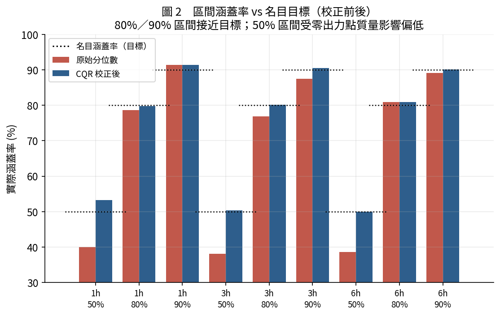
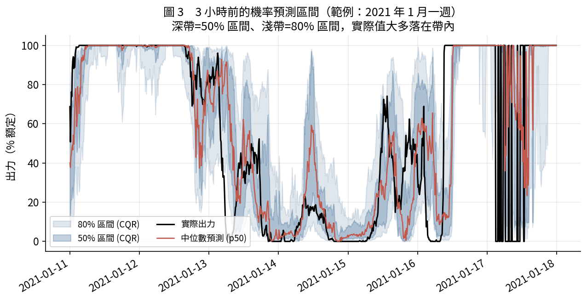
6.4 進階方法（家族二 · NREL 5 MW · 絕對 MW）
| 時程 | Interval RMSE | Quantile P50 RMSE | Recursive RMSE | Direct RMSE | Interval 涵蓋率 |
|---|---|---|---|---|---|
| 10min | 0.350 | 0.376 | 0.339 | 0.350 | 91.6% |
| 1h | 0.650 | 0.684 | 0.775 | 0.648 | 92.9% |
| 6h | 1.145 | 1.200 | 1.719 | 1.141 | 92.5% |
| 24h | 1.600 | 1.674 | 1.996 | 1.593 | 92.5% |
方法比較結論：短時程遞迴（Recursive）10min 最佳，但誤差累積使長時程明顯劣於 Direct；Conformal 90% 區間在四個時程涵蓋率都穩定在 91–93%（RMSE 單位為絕對 MW）。
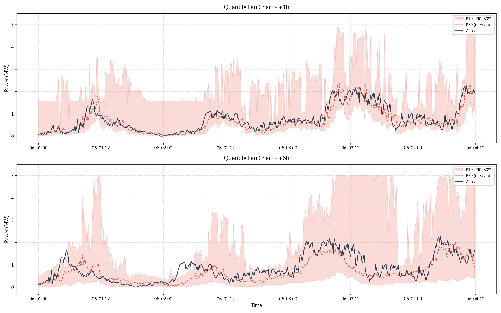
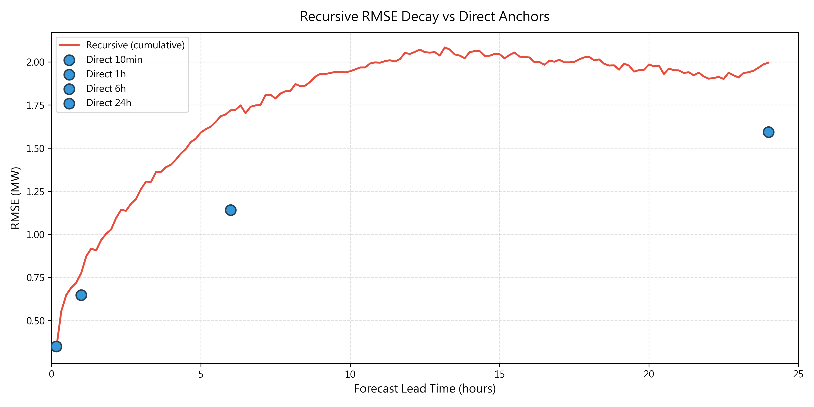
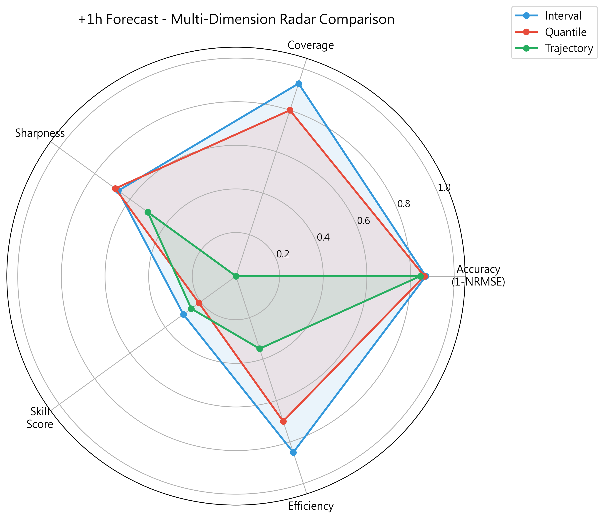
6.5 應用價值：日前結算與經濟避險
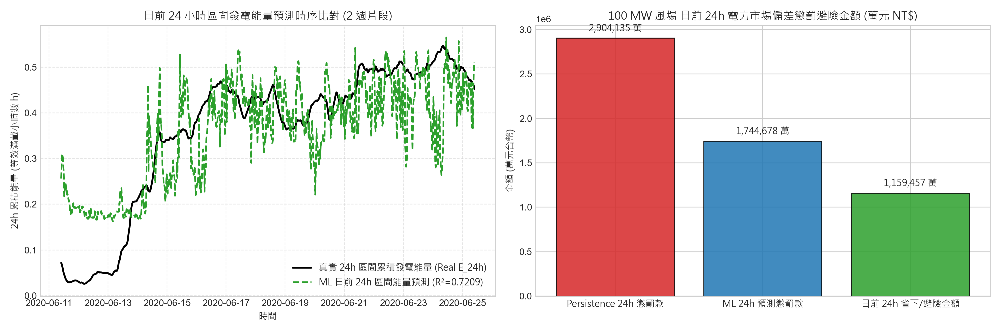
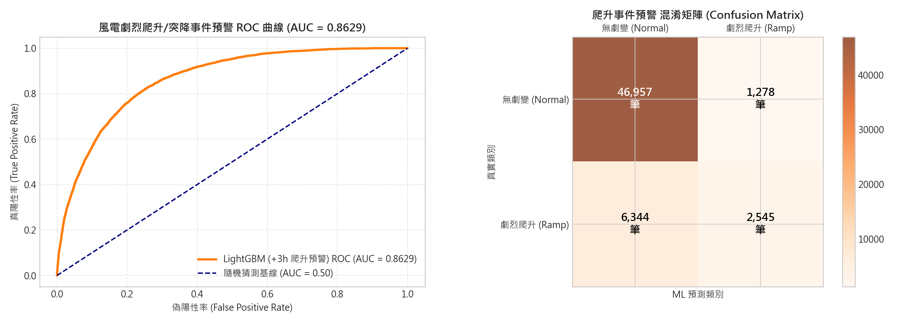
各專案結果彙整
PW / PW_Integrated / PW_Interval 家族一
PW
最乾淨的四段管線：驗證→特徵→模型選擇→評估。雙目標（風速 + 正規化 P）、時程 +1/3/6h。附「同參數雙任務適合度」實驗（發電 R²=0.889 vs 湍流 R²=0.759）。
PW_Integrated
十段式最完整版：資源評估（CF 45%）、多模型點預測、機率預測、特徵消融、跨期漂移驗證、區間能量、爬升事件、台幣經濟量化。
PW_Interval
把單點改寫為區間累積能量，並擴充台電 15-min 結算與日前 24h（96×15min）能量預測（R²=0.72，避險 115.9 億台幣/期）。
| PW_Interval 標的 | 15min 區間數 | 最佳模型 | nRMSE | \(R^2\) | 相對 Persist. |
|---|---|---|---|---|---|
| 15min 即時轉供 | 1 | LightGBM | 0.1543 | 0.9725 | +6.5% |
| 1h 電能交易 | 4 | LightGBM | 0.1901 | 0.9574 | +9.3% |
| 3h 調度預警 | 12 | LightGBM | 0.2624 | 0.9161 | +15.2% |
| 6h 超短期 | 24 | LightGBM | 0.2579 | 0.8741 | +27.9% |
| 日前 24h 總能量 | 96 | LightGBM | 0.4163 | 0.7209 | +28.2% |
power_forecast（根）家族一
資源評估 + 超短期預測的原型；直接信 is_valid（不重跑 QC）。含 30min–6h 更細時程的技術得分曲線與分季節評估、分位數 p10/p50/p90。是 interval_cl 的資料管線來源。
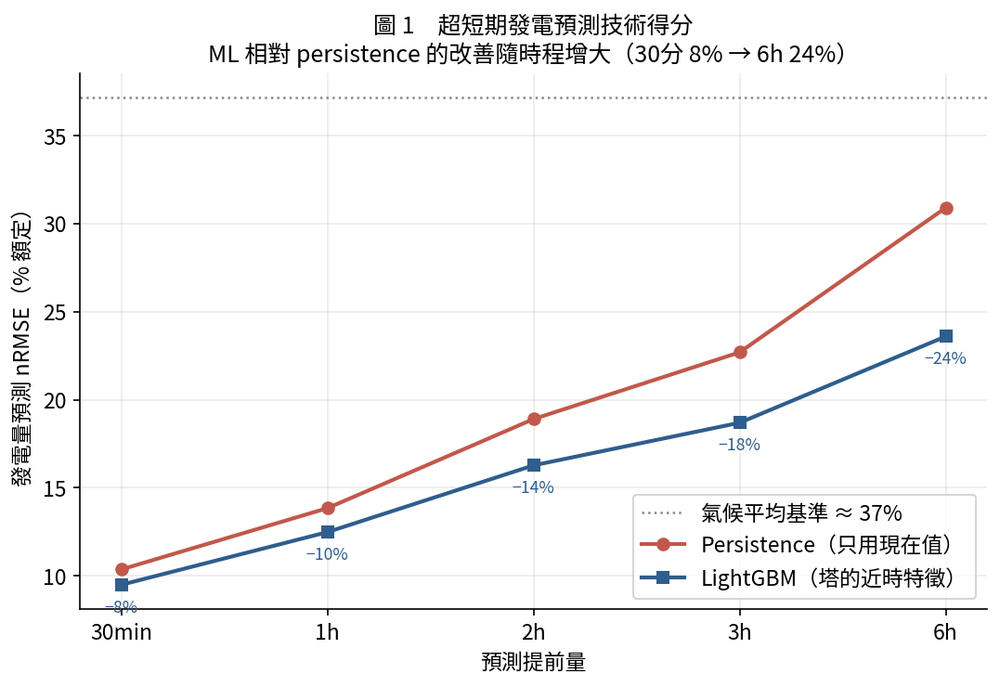
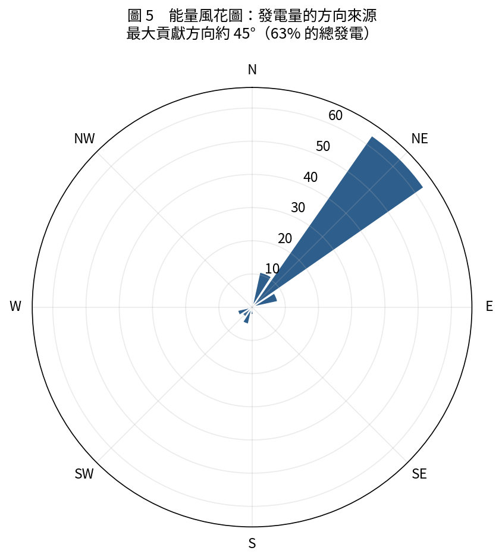
power_forecast_interval_ge（系統 A）家族一
窗口平均（總能量）預測，並新增 p10/p50/p90 機率區間，擴充到 24h。中位數 p50 R² 幾乎完全複製點模型（0.955→0.953），證明分位數模型與點模型一致可信。
power_interval_forecast_cl（系統 B）家族一
瞬時不確定性區間：21 個分位數模型（7 分位 × 3 時程）+ CQR 保形校正 + 完整機率評分（涵蓋率/寬度/pinball/CRPS/Winkler/可靠度圖）。沿用根專案的資料管線，可與點預測直接對照。
advanced_forecasting 家族二
唯一用 NREL 5 MW 官方曲線 + 絕對 MW 且併入 BSMI_turb 的專案。三種進階方法一次到位：Conformal Interval、Quantile、Recursive Trajectory（至 144 步 / 24h）。
| 時程 | Interval R² | 涵蓋率 | Winkler | Quantile CRPS | Trajectory R²(遞迴) |
|---|---|---|---|---|---|
| 10min | 0.972 | 91.6% | 1.519 | 0.074 | 0.975 |
| 1h | 0.904 | 92.9% | 2.815 | 0.113 | 0.864 |
| 6h | 0.705 | 92.5% | 4.425 | 0.210 | 0.317 |
| 24h | 0.421 | 92.5% | 5.078 | 0.343 | 0.101 |
湍流降尺度（消融 + 正式訓練）家族二資料
不同層次的問題：不預測「未來出力」，而是預測「當前 10 分鐘的湍流強度 TI = σ/U」（關乎風機疲勞載重）。60 個消融實驗的關鍵結論：
- 最值得預測的方向是 TI（正規化目標）——只用風速 R²≈0.14，加完整特徵跳到 0.755，機器學習加值最大（+0.66）。
- TI 幾乎完全由風向決定：最終 8 特徵模型中，四個風向分量佔重要性 90%（單
WD_97_cos就 57%）。物理上：不同風向的上風地表粗糙度差異巨大。 - 用 8 特徵打敗 17 特徵：熱力與
veer_97_35特徵被證實有害，精簡core8測試 R²=0.781（雙感測器天花板 0.99）。
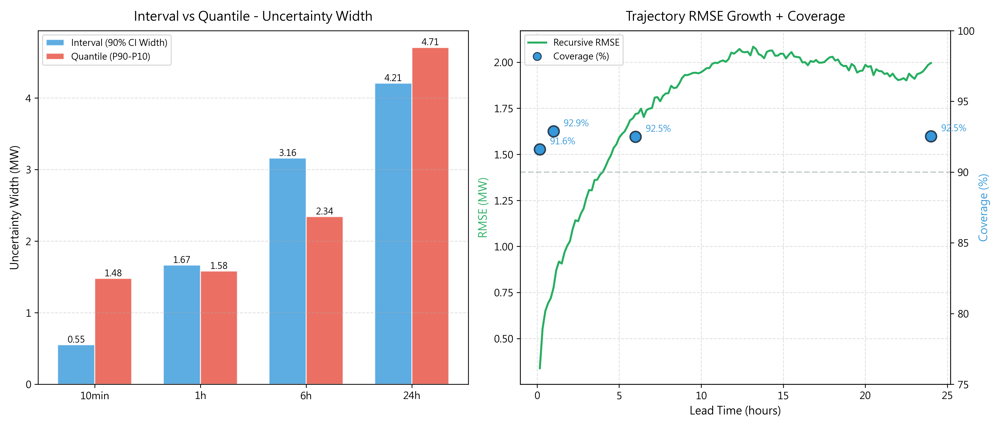
誠實限制（七專案共通）
- 虛擬出力非實測：由功率曲線推算，尾流／可用率／機型皆為假設。可用台電公開容量因數校準損失。
- 理想切出風速：曲線在 25 m/s 硬切，實際風機有遲滯，故極端強風的 0↔1 彈跳在真實中較平緩。
- 短時程機率區間略保守；零/額定的「點質量」讓低分位較難校準（80%/90% 不受影響）。
- 逐時日前仍需 NWP：塔只有「過去到現在」，超過 ~6h persistence 逼近長期平均而失效；日前 48h 需接 CWA/ERA5 數值天氣預報做偏差校正。
一頁總結
- 這是個容量因數 45% 的優質離岸站點；
- LightGBM 在 0–6h 全面打敗 persistence（+8% 至 +28%，時程越長優勢越大）；
- 改預測窗口能量後 3h R² 由 ~0.79 跳到 0.91；日前 24h 能量 R²=0.72；
- 機率區間（CQR）在 80%/90% 校準到名目 ±1pp，可直接用於備轉容量規劃；
- advanced_forecasting 用 NREL 5 MW 絕對量示範 Conformal/Quantile/Trajectory 三法；
- 湍流降尺度證明 TI 幾乎完全由風向決定（8 特徵 R²=0.78）。